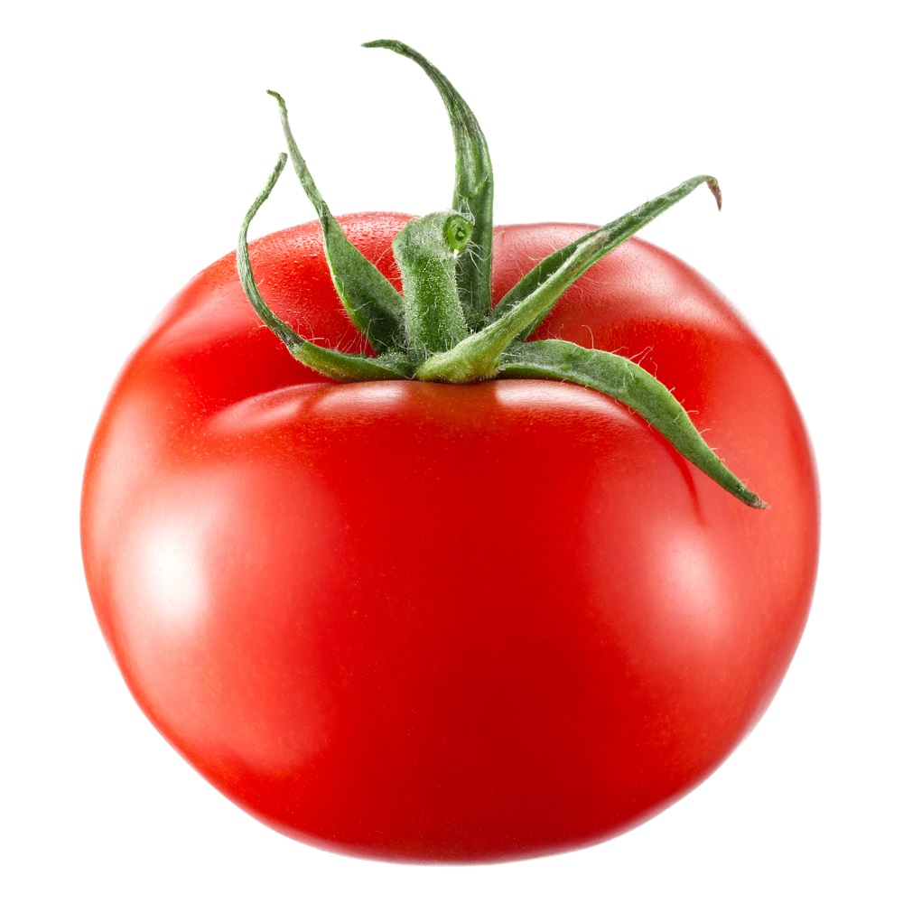

Historia o pomidorach
Pomidor(Solanum sekcja Lycopersicon Mill.) – sekcja w obrębie rodzaju psianka
(Solanum) obejmująca grupę
gatunków wyodrębnianych dawniej w rodzaj pomidor (Lycopersicon). Rośliny te pochodzą z zachodniej części
Ameryki Południowej. Jeden z gatunków – pomidor zwyczajny (Solanum lycopersicum) – jest rozpowszechnioną
rośliną uprawną. Według Polskiej Klasyfikacji Wyrobów i Usług jego owoc jest warzywem.
